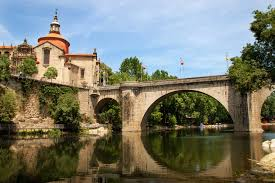
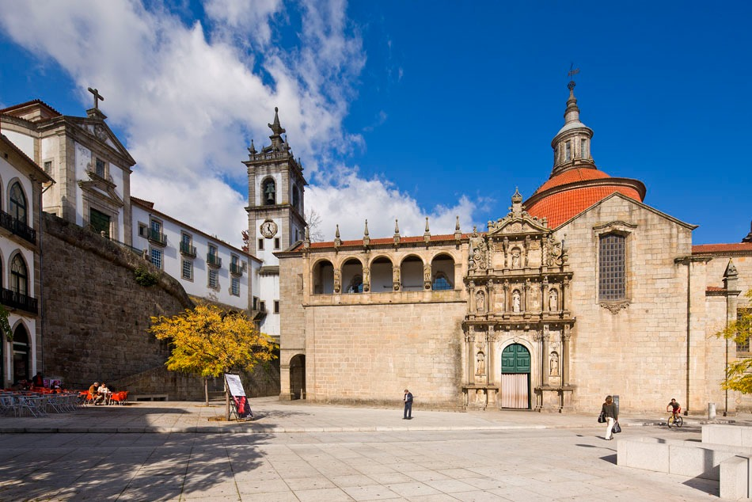
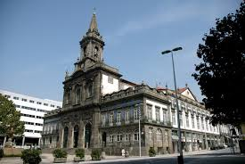
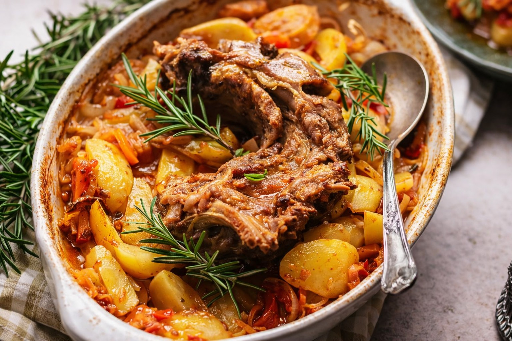
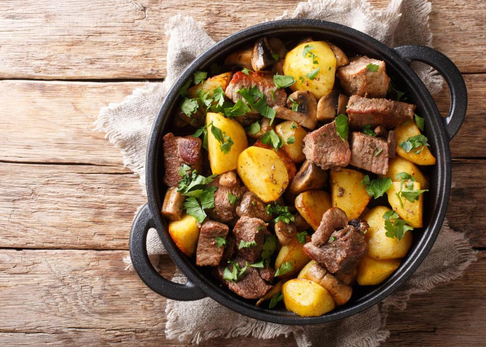
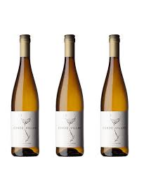
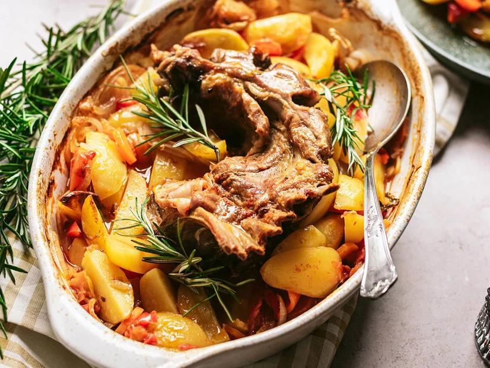
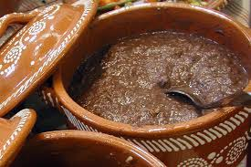

Características Geográficas
Amarante situa-se no interior da região, às margens do rio Tâmega, combinando planícies fluviais com zonas montanhosas. O clima é temperado atlântico no geral, mas com maior amplitude térmica que a zona costeira, apresentando invernos mais frios e verões mais quentes.
População
~52 116 hab.
Área
301,33 km²
Atividades Económicas
A economia de Amarante assenta principalmente na agricultura, com destaque para a produção de vinho verde, frutas e hortícolas, e na indústria têxtil e calçista. O turismo cultural e patrimonial é um setor em crescimento, impulsionado pelo património histórico e pelas tradições locais, sendo a cidade conhecida pelo mercado semanal que atrai visitantes de toda a região.
Pontos de Interesse




- Ponte de São Gonçalo — Ponte histórica sobre o rio Tâmega que é símbolo da cidade
- Mosteiro de São Gonçalo — Mosteiro renascentista do século XVI com importância arquitetónica
- Igreja da Trindade — Igreja barroca situada no centro da cidade
- Serra do Marão — Proximidade com paisagens montanhosas e trilhos pedestres
Gastronomia Típica

Rojões
Prato típico de carne de porco estufada com batata, tradição local

Vinho Verde
Produção vinícola tradicional das quintas do Tâmega

Cabrito Assado
Prato de carne típico das zonas montanhosas do Marão

Papas de Sarrabulho
Prato tradicional deinhame com sangue de porco